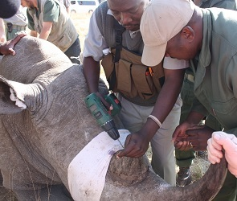
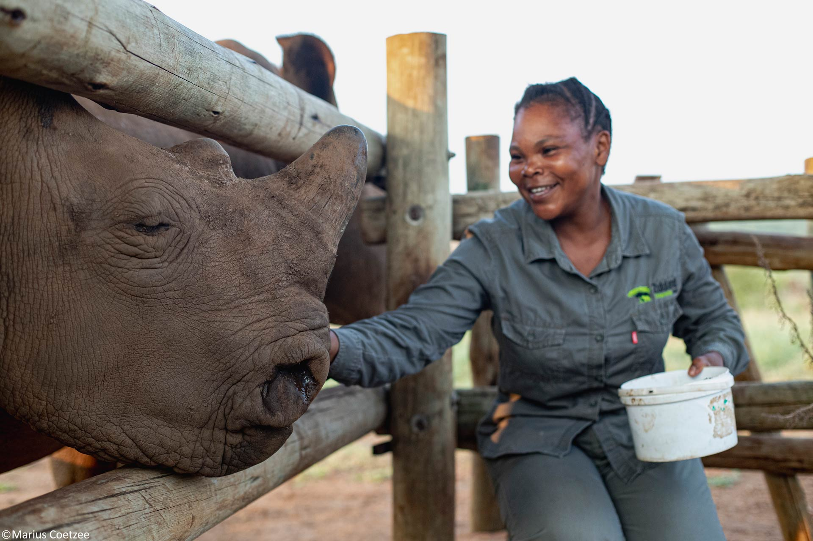
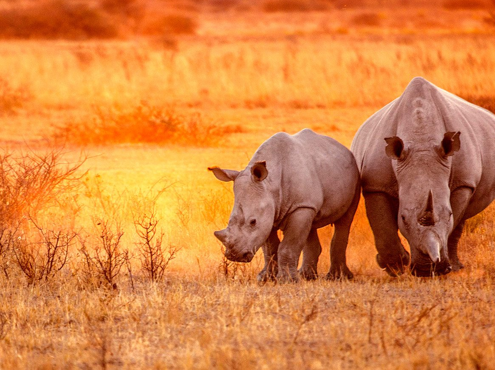

On the Ground
Our founder, Lesedi with a baby rhino. Reality of rhino conservation in iSimangaliso.
The struggle to save South Africa's rhinos is a fight waged on the frontlines of conservation. Even as the nation celebrates a drop to 352 rhinos lost in 2025, the shadow of poaching, fueled by organized crime and relentless syndicates, still looms. This is not just a crisis; it is a call to action.
Our founder, Lesedi with a baby rhino. Reality of rhino conservation in iSimangaliso.



iSimangaliso's rhinos — the world's oldest land mammal, still fighting to survive.
South Africa stands as the last great stronghold for the world's rhinos. In 2025, 352 rhinos fell to poachers—a hard-earned 16% decrease from the previous year's toll of 420. This progress is the result of tireless efforts, but the fight is far from over. Kruger National Park witnessed a dramatic surge, with 175 rhinos slaughtered, nearly twice as many as the year before, while Hluhluwe-iMfolozi Park in KwaZulu-Natal saw hope flicker as numbers dropped from 198 to 63. Yet, with 178 rhinos lost, Mpumalanga wore the heaviest scars. The battle rages on, shifting terrain and tactics.
At the heart of this crisis are rhino horns — coveted in Asian markets as status symbols and as ingredients in traditional medicine, despite their lack of proven medical efficacy. Their black-market value draws well-organised criminal networks who stop at nothing, orchestrating high-tech operations and exploiting the vulnerable. From tranquiliser darts to gunfire, from dehorning to poisoning, these syndicates adapt constantly — leaving devastation in their wake.
The poaching crisis is not simply about individual criminals. It is fuelled by organised international crime, corruption within conservation institutions, and persistent demand in overseas markets. Tackling it requires action at every level: on the ground, in the courts, and across borders.

South Africa's response is powerful and multifaceted. Every intervention below is a promise made to future generations.
Removing the temptation from poachers entirely — dehorning rhinos without harming them has saved countless lives by eliminating the primary target of criminal operations.
Camera traps, motion sensors, and drone technology bring round-the-clock vigilance to remote areas, providing early warning and enabling rapid response by ranger units.
The IWZ Programme unites state and private reserves under coordinated protection strategies — because only together can conservation succeed at the scale the rhino crisis demands.
From polygraph testing of rangers to the prosecution of syndicate members and the pursuit of harsh judicial sentences — striking at the heart of corruption and organised crime.
Empowering local communities to become stewards and defenders — turning potential poachers into protectors through education, economic alternatives, and genuine inclusion in conservation.
Embedding safe radioactive isotopes into rhino horns makes trafficking detectable at international border checkpoints, making the black market trade riskier and less profitable.
Victory is possible, but the struggle is ongoing. As KwaZulu-Natal tightens its defences, criminal focus shifts to Kruger National Park and Mpumalanga — a cat-and-mouse dynamic that demands vigilance, intelligence-led action, and unwavering commitment.
Sustained conservation, international solidarity, and relentless law enforcement are the bulwarks upon which the rhino's future rests. Every voice, every donation, every responsible tourist plays a part. Together, we can shape a tomorrow where black and white rhinos roam free — symbols of resilience, hope, and the unbreakable will to survive.
With this documentary, we wish to shed light on this situation and expose global audiences to the reality of rhino poaching. With the funding raised, we strive to support and expand rhino rehabilitation programmes and anti-poaching measures — to ensure that our rhinos do not disappear on our watch.
{kind=link}
{kind=link}
{kind=link}